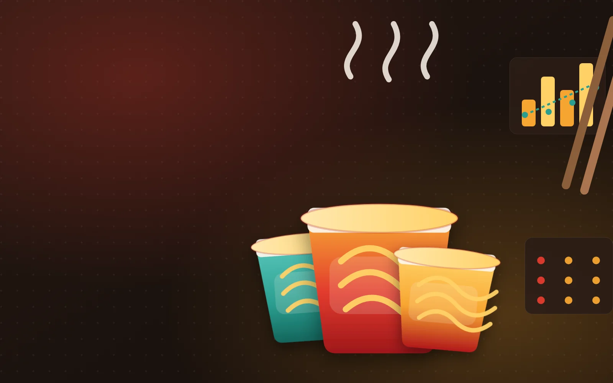
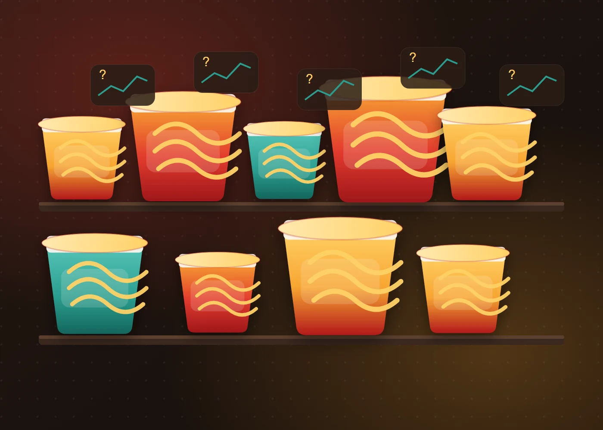
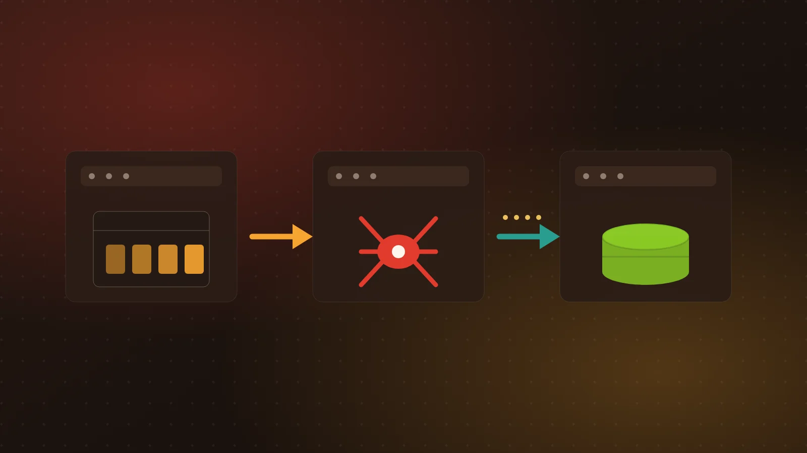
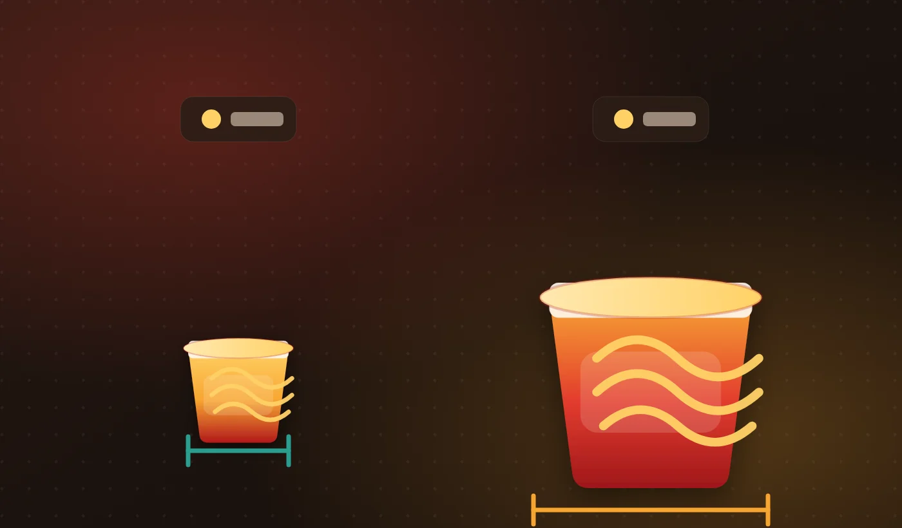
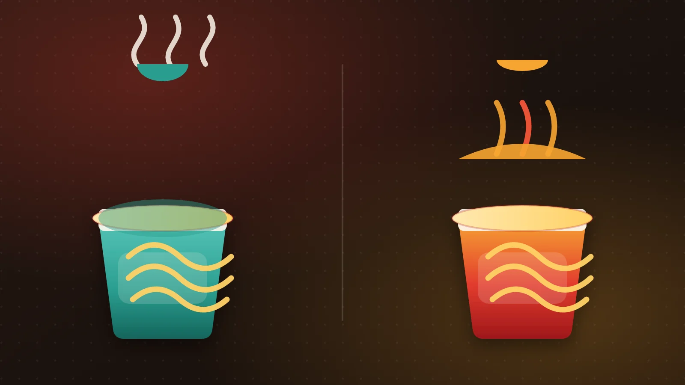
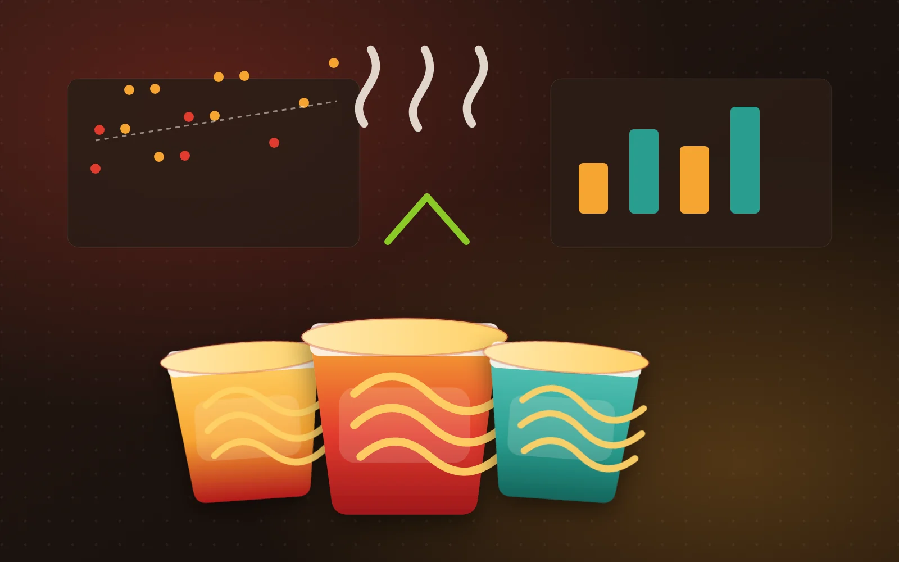

국내 컵라면 40종의 가격 · 중량 · 영양성분 비교 분석

편의점·온라인에서 가장 흔히 사는 한 끼.
같은 1,000원대여도 담긴 양과 영양은 다르다.
비싼 제품이 꼭 더 “가성비”라는 보장은 없다.

수집 후보 282건 → 컵라면만 골라 40종으로 정제
브랜드제품명중량가격묶음수량개당가격열량나트륨탄수화물당류지방단백질소컵/큰컵국물/볶음출처 URL
원칙 · 동일 제품 중복 제거 · 확인 불가 값은 추정 없이 null · 모든 값에 출처 URL 보존
4개 브랜드 40종 · 가격·중량 32종, 영양성분 14종 보유
Q3평균 1,353~1,550원 · 차이는 약 200원뿐
용량 기준으론 농심이 가장 비싸다 (1,797원/100g)
Q1상관 r = 0.41 · 같은 1,400원대에서 중량이 2배 이상 벌어진다

최저 280kcal(컵 불닭볶음면) ~ 최고 575kcal(4가지치즈불닭) · 대부분 400~500kcal
Q2가격이 비쌀수록 열량도 약간 높다 r = 0.41 (표본 작음 · 참고용)
Q4팔도 1,516mg > 삼양 1,166mg (+30%)
Q5중량↑ → 나트륨↑ r = 0.71 (삼양 5종)
중량이 커지면 나트륨도 함께 커지는 경향(상관관계)이며, 인과관계로 해석해서는 안 됩니다.

Q6볶음형 당류가 국물형의 약 2.3배 · 탄수화물·단백질은 비슷
Q7최저 1,005원 ↔ 최고 2,307원 · 같은 1,000원대에서도 약 2.3배 차이
가격×중량 상관 r=0.41. 비싼 컵라면이 항상 더 많지는 않습니다.
같은 1,000원대에서 100g당 가격이 최대 2.3배 차이납니다.
국물형 1,612mg vs 볶음형 1,230mg. 국물까지 마시면 차이는 더 커집니다.
중량×나트륨 r=0.71. 큰 컵은 그만큼 나트륨도 큽니다.
값이 비싸다고
더 좋은 것은 아니다.
100g당 가격과 나트륨을 함께 보면, 같은 1,000원대에서도 선택의 기준이 달라진다.
